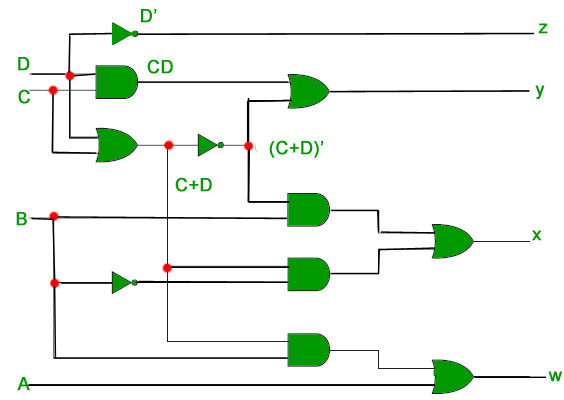

Prerequisite – Number System and base conversions
Excess-3 binary code is a unweighted self-complementary BCD code.
Self-Complementary property means that the 1’s complement of an excess-3 number is the excess-3 code of the 9’s complement of the corresponding decimal number. This property is useful since a decimal number can be nines’ complemented (for subtraction) as easily as a binary number can be ones’ complemented; just by inverting all bits.
For example, the excess-3 code for 3(0011) is 0110 and to find the excess-3 code of the complement of 3, we just need to find the 1’s complement of 0110 -> 1001, which is also the excess-3 code for the 9’s complement of 3 -> (9-3) = 6.
Converting BCD(8421) to Excess-3 –
As is clear by the name, a BCD digit can be converted to it’s corresponding Excess-3 code by simply adding 3 to it.
Let  be the bits representing the binary numbers, where
be the bits representing the binary numbers, where  is the LSB and
is the LSB and  is the MSB, and
is the MSB, and
Let be the bits representing the gray code of the binary numbers, where is the LSB and  is the MSB.
is the MSB.
The truth table for the conversion is given below. The X’s mark don’t care conditions.
![\begin{tabular}{||c|c|c|c||c|c|c|c||} \hline \multicolumn{4}{||c||}{BCD(8421)} & \multicolumn{4}{|c||}{Excess-3}\\ \hline A & B & C & D & w & x & y & z \\ \hline \hline 0 & 0 & 0 & 0 & 0 & 0 & 1 & 1 \\ \hline 0 & 0 & 0 & 1 & 0 & 1 & 0 & 0 \\ \hline 0 & 0 & 1 & 0 & 0 & 1 & 0 & 1 \\ \hline 0 & 0 & 1 & 1 & 0 & 1 & 1 & 0 \\ \hline \hline 0 & 1 & 0 & 0 & 0 & 1 & 1 & 1 \\ \hline 0 & 1 & 0 & 1 & 1 & 0 & 0 & 0 \\ \hline 0 & 1 & 1 & 0 & 1 & 0 & 0 & 1 \\ \hline 0 & 1 & 1 & 1 & 1 & 0 & 1 & 0 \\ \hline \hline 1 & 0 & 0 & 0 & 1 & 0 & 1 & 1 \\ \hline 1 & 0 & 0 & 1 & 1 & 1 & 0 & 0 \\ \hline 1 & 0 & 1 & 0 & X & X & X & X \\ \hline 1 & 0 & 1 & 1 & X & X & X & X \\ \hline \hline 1 & 1 & 0 & 0 & X & X & X & X \\ \hline 1 & 1 & 0 & 1 & X & X & X & X \\ \hline 1 & 1 & 1 & 0 & X & X & X & X \\ \hline 1 & 1 & 1 & 1 & X & X & X & X \\ \hline \hline \end{tabular}](../../../imgs/digital-logic/dcd7200cd26a857b859ee0807785f18b.jpg "Rendered by QuickLaTeX.com")
To find the corresponding digital circuit, we will use the K-Map technique for each of the Excess-3 code bits as output with all of the bits of the BCD number as input.

Corresponding minimized Boolean expressions for Excess-3 code bits –
The corresponding digital circuit-

Converting Excess-3 to BCD(8421) –
Excess-3 code can be converted back to BCD in the same manner.
Let be the bits representing the binary numbers, where is the LSB and is the MSB, and
Let be the bits representing the gray code of the binary numbers, where is the LSB and is the MSB.
The truth table for the conversion is given below. The X’s mark don’t care conditions.
![\begin{tabular}{||c|c|c|c||c|c|c|c||} \hline \multicolumn{4}{||c||}{Excess-3} & \multicolumn{4}{|c||}{BCD}\\ \hline w & x & y & z & A & B & C & D \\ \hline \hline 0 & 0 & 0 & 0 & X & X & X & X \\ \hline 0 & 0 & 0 & 1 & X & X & X & X \\ \hline 0 & 0 & 1 & 0 & X & X & X & X \\ \hline 0 & 0 & 1 & 1 & 0 & 0 & 0 & 0 \\ \hline \hline 0 & 1 & 0 & 0 & 0 & 0 & 0 & 1 \\ \hline 0 & 1 & 0 & 1 & 0 & 0 & 1 & 0 \\ \hline 0 & 1 & 1 & 0 & 0 & 0 & 1 & 1 \\ \hline 0 & 1 & 1 & 1 & 0 & 1 & 0 & 0 \\ \hline \hline 1 & 0 & 0 & 0 & 0 & 1 & 0 & 1 \\ \hline 1 & 0 & 0 & 1 & 0 & 1 & 1 & 0 \\ \hline 1 & 0 & 1 & 0 & 0 & 1 & 1 & 1 \\ \hline 1 & 0 & 1 & 1 & 1 & 0 & 0 & 0 \\ \hline \hline 1 & 1 & 0 & 0 & 1 & 0 & 0 & 1 \\ \hline 1 & 1 & 0 & 1 & X & X & X & X \\ \hline 1 & 1 & 1 & 0 & X & X & X & X \\ \hline 1 & 1 & 1 & 1 & X & X & X & X \\ \hline \hline \end{tabular}](../../../imgs/digital-logic/60a9c7c1e73e388e0cbc1aa0f93dec9c.jpg "Rendered by QuickLaTeX.com")
K-Map for D-

K-Map for C-
K-Map for B-

K-Map for A-
Corresponding minimized boolean expressions for Excess-3 code bits –

The corresponding digital circuit –
Here  correspond to and
correspond to and  correspond to .
correspond to .

References-
Digital Design, 5th edition by Morris Mano and Michael Ciletti
Excess-3 – Wikipedia